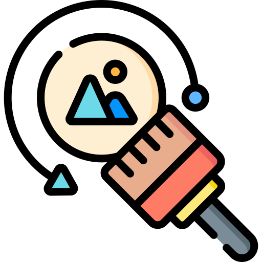
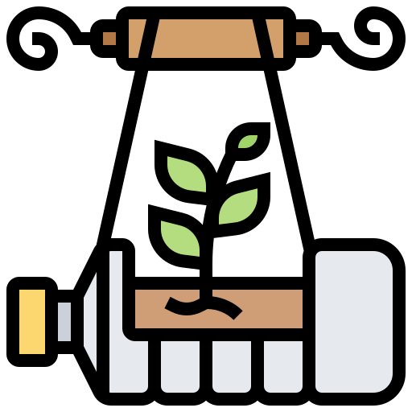
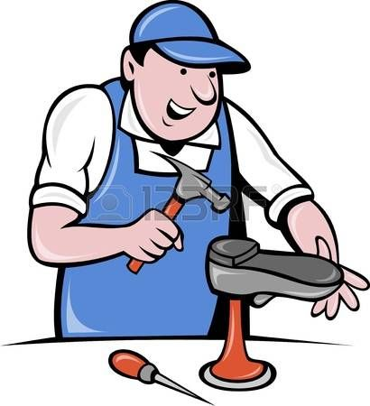
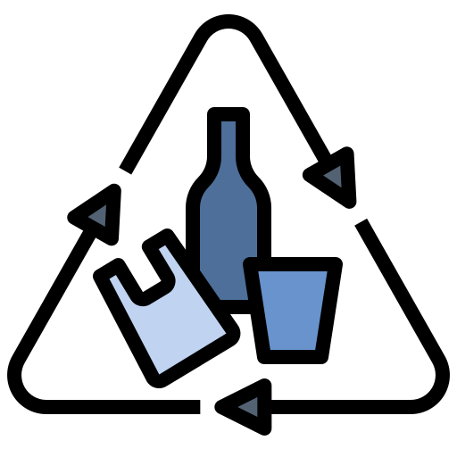

| Rediseñar |
Cambiar el diseño de productos y procesos para que sean más sostenibles, utilizando menos recursos y generando menos residuos. |
 |
| Reducir |
Consumir menos, tanto de recursos naturales como de energía, y generar menos residuos. |
 |
| Reutilizar |
Dar una nueva vida a los productos que ya no se usan, en lugar de desecharlos. |
.jpeg) |
| Reparar |
Prolongar la vida útil de los productos mediante la reparación, en lugar de reemplazarlos. |
 |
| Renovar |
Actualizar productos o sistemas, utilizando materiales reciclados o reutilizados. |
 |
| Recuperar |
Extraer materiales y energía de los residuos, evitando que vayan a vertederos. |
 |
| Reciclar |
Transformar los residuos en nuevos productos, cerrando el ciclo de vida de los materiales. |
.jpeg) |